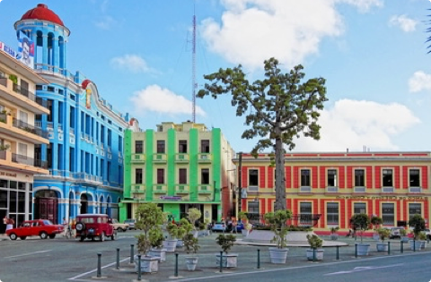
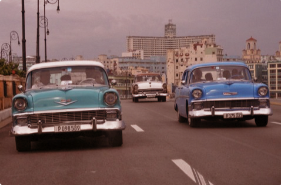
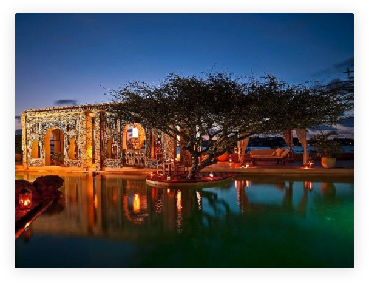
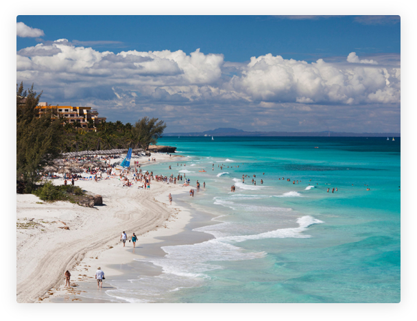
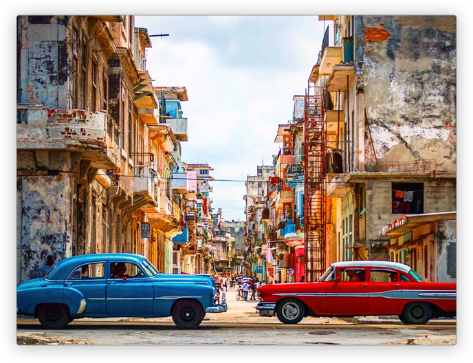

Why you'll love vacation in Cuba
It always had the allure a forbidden fruit. I love it for its uniqueness, creativity and survivalist spirit. I love it because, despite 60 years of setbacks, it remains an upbeat and open place. Walk down the street with a Cuban friend and, within one block, you’ll have received five handshakes, four kisses, three greetings of ‘dime hermano!’ and at least two invites into someone’s house.Read more >>
1,920
Trips
271
Venues
3,321
Tickets Sold
2,912
Review
What Cuba is about
Cuba is like a prince in a poor man’s coat; behind the sometimes shabby facades, gold dust lingers. It’s these rich dichotomies that make travel here the exciting. Trapped in a time warp and reeling from an economic embargo that has grated for more than half a century, this is a country where you can wave goodbye to everyday assumptions and expect the unexpected.Read more >>

Historical Heritage
Bereft of modern interference, Cuba’s colonial cities haven’t changed much since musket-toting pirates stalked the Caribbean. Atmosphere and architecture is particularly stirring in Havana, Trinidad and Camagüey where grandiose squares and cobbled streets tell erstwhile tales of opulence and intrigue.
Astonishing Beaches
Whether you’re staying in a luxury hotel in Havana or exploring the rural charms of Vinales, in some ways it’s all the real Cuba. Some travellers might opt to miss the beach resort town of Varadero, but this energetic beachside paradise should still be an option to consider as part of your Cuban travel plans.
The Cadillacs of Cuba
Hover for more info

The American trade embargo with Cuba in 1960 had the effect of instantly separating thousands of 1940s and 1950s Detroit-built cars from their spare parts supply. Convertibles were always popular, thanks to year-round tropical weather. The place for posing with your ride is hard to miss in Havana. The squares around Capitolio, a flattering copy of Washington’s Capitol building, are lined with 50-year-old American cars during daylight hours.
Cuba in Photos
When you think of Carribean, you’re probably not thinking of Cuba. It’s the lone acacia silhouetted against a horizon stretching into eternity. It’s the snow-capped mountain almost on the equator and within sight of harsh deserts. It’s the lush, palm-fringed coastline of the Indian Ocean, it’s the Great Rift Valley that once threatened to tear the continent asunder, and it’s the dense forests reminiscent of the continent’s heart. In short, Kenya is a country of epic landforms that stir our deepest longings for this very special continent.





© 2016 All rights reserved.